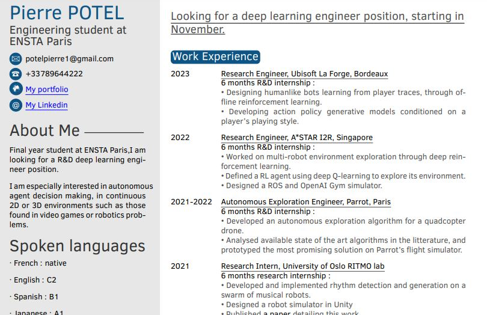
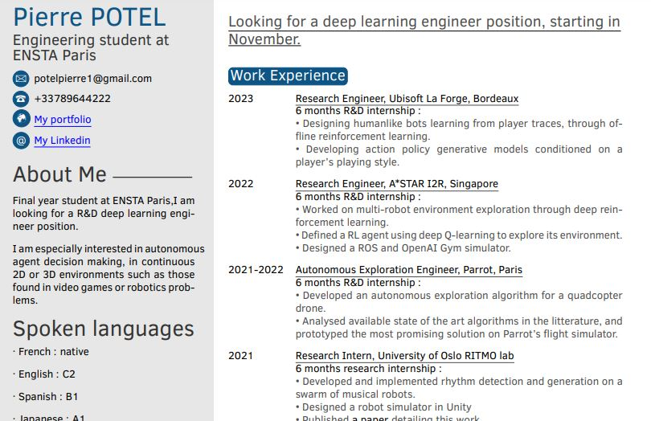
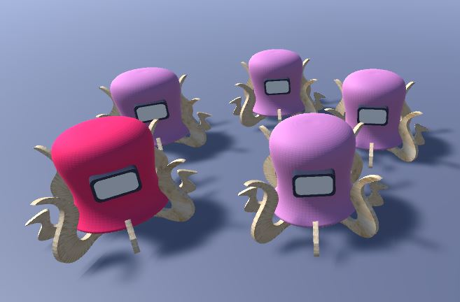

I'm a master's student interested in videogames, robotics, digital arts, AI, virtual and mixed reality and more...
I study at the oldest French engineering school ENSTA Paris and I'm looking for a a R&D deep learning engineer position starting in November. You can find my resume here.
 

Team project working on designing a reinforcement learning agent which competes with others on a race track in TrackMania.
Reinforcement learning project focusing on unit micromanagement during skirmish in Starcraft II.
R&D internship at A*STAR Singapore creating a multi-robot 3D mapping framework using deep reinforcement learning. # #Exploration #Cooperation
September-March, 2021-2022
R&D internship developing a 3D environment exploration method using a drone for photogrammetry and inspection. #Parrot #Path planning

Discover my research project at University of Oslo RITMO lab, where I create a band of musical robots. #Unity #Simulation
Reinforcement learning project where a hummingbird AI competes with a human player to drink more flower nectar than him. #Unity ML-Agents #Competition
A team project where we try to create a swarm of glowing drones which creates 3D shapes in the dark. #Drones #Project-Management
Using image segmentation algorithms to extract blood capillary network from pictures of the retina #Python #Image segmentation
A group project where we build an online multiplayer Tetris video game! #C++ #VideoGame

Can genetic AI help artists to find interesting looking Julia fractals? #Python #Software
A genetic algorithm I designed along with two other ENSTA students to try to find performing solutions to an NP Complete math problem. #Python #Maths

Using noisy data from multiple sensors to make a robot understand its environment. #Matlab #SLAM

Would a cybernetic tail be useful to stabilize a biped robot's gait? (in French) #Arduino #Prototyping